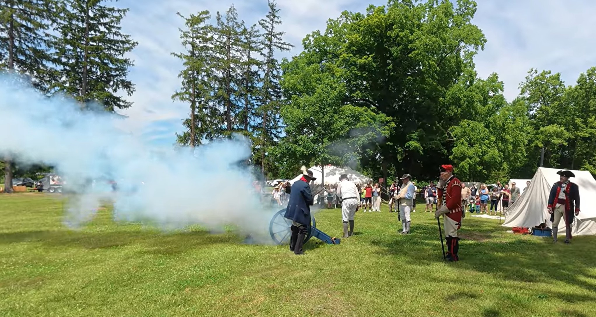

Adena Mansion Cannon Fire
A living history demonstration that brought Ohio's early days to life with one unforgettable blast.

Our Visit
We visited Adena Mansion & Gardens during the America 250 Celebration, a weekend dedicated to bringing Ohio's early history to life.
Throughout the day, living history interpreters demonstrated artillery, musket and rifle drills, military camp life, period music, and other activities that gave visitors a glimpse into eighteenth-century America.
One of the highlights was the cannon firing demonstration. Hearing the blast echo across the historic grounds made this more than a museum visit—it became an experience we won't forget.
A Little History
Adena Mansion was the home of Thomas Worthington, one of Ohio's first United States Senators and the state's sixth governor.
The mansion overlooks the surrounding countryside near Chillicothe and helps tell the story of Ohio's early statehood and frontier history.
Living history demonstrations, including cannon firings, help visitors experience what life was like during the early nineteenth century.
Come Along With Us
Watch the Adena Mansion Cannon Fire.
▶ Watch on YouTubeNearby Discoveries
Our visit to Adena Mansion included more than the cannon demonstration. We also experienced the flag-raising ceremony and explored the historic grounds.
As GO-CA-TION continues to grow, this page will connect with more historic sites and backroad discoveries throughout southern Ohio.